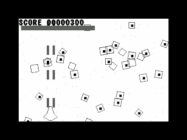

ここは『皆様の作品紹介ページ』でご紹介させて頂いている方の最新作以前の作品をご紹介するページです。
ゲーム作品
我が家を守れ！！ＤＸ
 |
ゲームクリエイターチーム ＧＲＣ さんが制作されたゲームです。 ある日突然、陽気な大家族メルセン一家の家にミサイルが四方八方から飛来してきました。 何とかして防がなければならないわけですが、一体どうやって・・・？ ゲームは基本的にテンキーのみを使い、１プレイに必要な時間も少ないので 手軽に遊ぶ事が出来ます。長時間プレイのゲームで疲れた方、ゲーム画面を 見てプレイしたいと思われた方は是非プレイしてみて下さい。 尚、オフィシャルページで世界ランキングがまったりと開催されています。 
|
聖闘士華音 葉派伝説完結編
 |
同人サークル ＲＡＰＩＤ ＦＩＲＥ さんが制作されたアクションゲームです。 主にストーリー進行パート、横スクロールアクションパート、ボス戦パートの繰り返しでゲームは進行し、 十二宮の先に在る教皇の間を目指して、立ちはだかる葉派聖闘士を主人公達が次々と蹴散らして行く物語です。 ボス戦はもぐら叩きのような反射神経を問われる一風変わった戦闘システムになっています。 というか、恐らくファミコンの聖闘士○○です。(笑) 私はオリジナルをプレイした事も、原作も読んだことが無いのでストーリーの流れは余り掴めなかったのですが、 元になったＦＣソフト、登場するキャラクターが出てくるＰＣソフト、どちらもプレイした事がある方なら相当 楽しめるのではないかと思います。 尚こちらのソフトは有料なので、入手方法は ＲＡＰＩＤ ＦＩＲＥ さんのホームページでご確認ください。 ＲＡＰＩＤ ＦＩＲＥ |
ＳＰＡＲＴＡＮ ＸＸ
 |
同人サークル ＲＡＰＩＤ ＦＩＲＥ さんが制作された横スクロール型アクションゲームです。 キック、パンチと緊急回避技を駆使して敵を蹴散らし、ステージの最後に待ち構えているボスを倒すのが目的です。というか、スパ○○ンＸです。(笑) ゲームとしての完成度も非常に高いのですが、それと同じくらい(かそれ以上)に気合の入った演出もかなり必見です。(^^; 有料ソフトなので、入手方法は ＲＡＰＩＤ ＦＩＲＥ さんが参加されているイベント会場で直接購入するか、同人ソフト販売店で購入することになりますが、見かけたときは是非手にとってみてください。 ＲＡＰＩＤ ＦＩＲＥ |
ＷＩＲＥＤ for Windows
|  |
一色純平さんが制作されたワイヤーフレーム風縦スクロールシューティングゲームです。このソフトは説明の
通り、すべてのキャラクターがワイヤーフレームで表現されています。画面が単色なのは元が P/ECE 用の
ソフトだったから、ということだそうですが、フルカラーのグラフィックに慣らされた目にはとても新鮮で、
渋いＢＧＭも独特な雰囲気を更に盛り上げてくれます。 ゲージが溜まれば何度でも使える『ワイヤーボム』で敵をけちらすのも爽快です。 是非全ステージクリアを目指してみてください。 ５９番街の部屋 |
実用作品
戻る